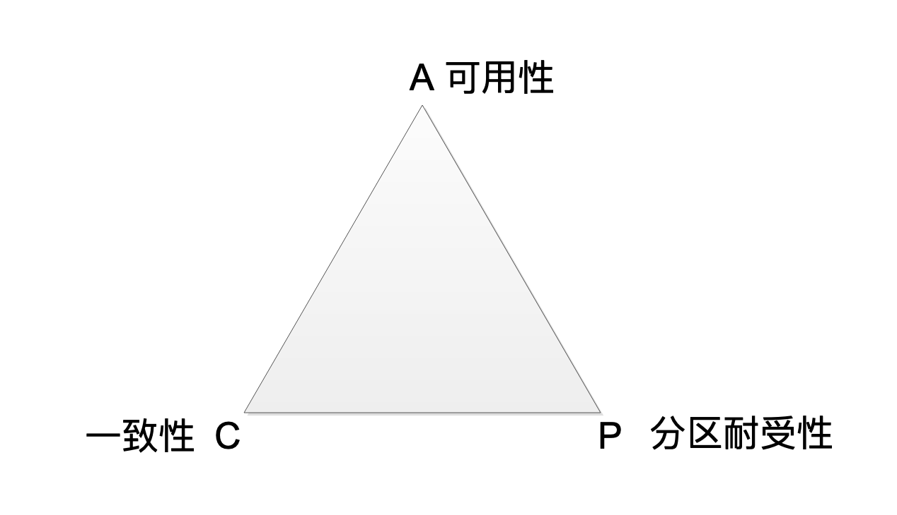
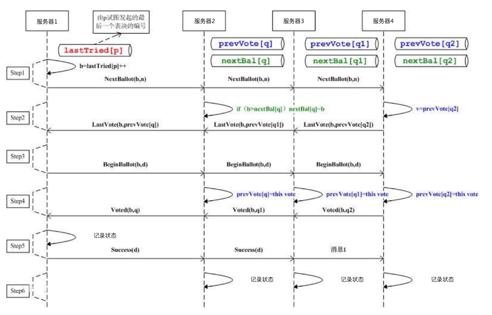
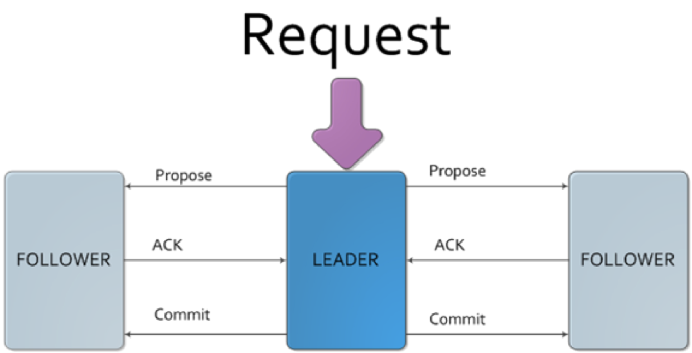
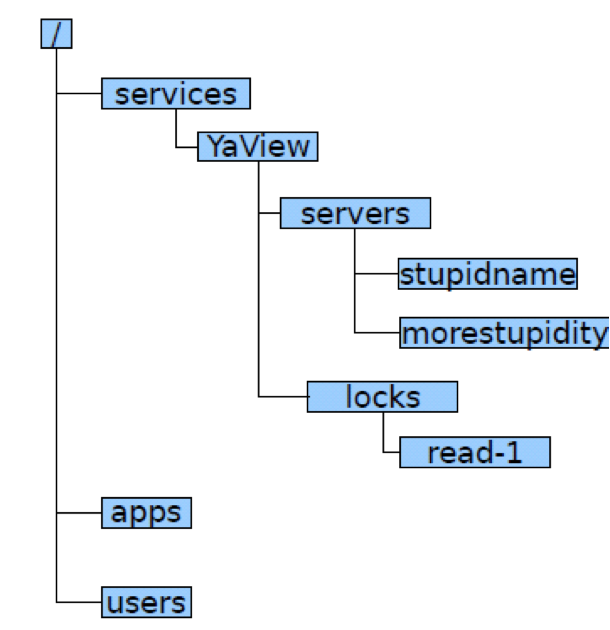
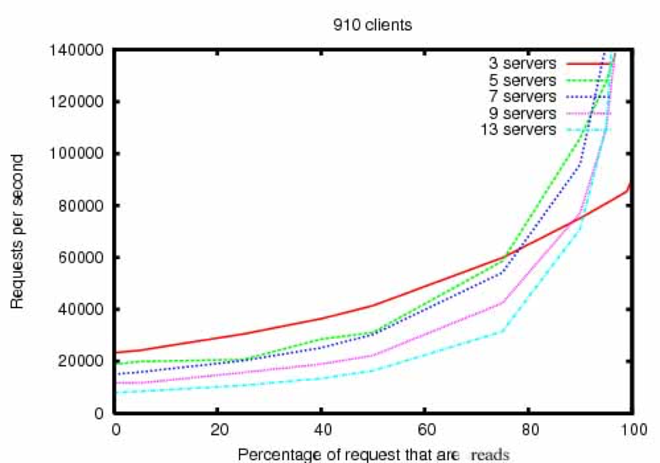

- 00 开篇词 为什么说每个软件工程师都应该懂大数据技术？.md.html
- 01 大数据技术发展史：大数据的前世今生.md.html
- 02 大数据应用发展史：从搜索引擎到人工智能.md.html
- 03 大数据应用领域：数据驱动一切.md.html
- 04 移动计算比移动数据更划算.md.html
- 05 从RAID看垂直伸缩到水平伸缩的演化.md.html
- 06 新技术层出不穷，HDFS依然是存储的王者.md.html
- 07 为什么说MapReduce既是编程模型又是计算框架？.md.html
- 08 MapReduce如何让数据完成一次旅行？.md.html
- 09 为什么我们管Yarn叫作资源调度框架？.md.html
- 10 模块答疑：我们能从Hadoop学到什么？.md.html
- 11 Hive是如何让MapReduce实现SQL操作的？.md.html
- 12 我们并没有觉得MapReduce速度慢，直到Spark出现.md.html
- 13 同样的本质，为何Spark可以更高效？.md.html
- 14 BigTable的开源实现：HBase.md.html
- 15 流式计算的代表：Storm、Flink、Spark Streaming.md.html
- 16 ZooKeeper是如何保证数据一致性的？.md.html
- 17 模块答疑：这么多技术，到底都能用在什么场景里？.md.html
- 18 如何自己开发一个大数据SQL引擎？.md.html
- 19 Spark的性能优化案例分析（上）.md.html
- 20 Spark的性能优化案例分析（下）.md.html
- 21 从阿里内部产品看海量数据处理系统的设计（上）：Doris的立项.md.html
- 22 从阿里内部产品看海量数据处理系统的设计（下）：架构与创新.md.html
- 23 大数据基准测试可以带来什么好处？.md.html
- 24 从大数据性能测试工具Dew看如何快速开发大数据系统.md.html
- 25 模块答疑：我能从大厂的大数据开发实践中学到什么？.md.html
- 26 互联网产品 + 大数据产品 = 大数据平台.md.html
- 27 大数据从哪里来？.md.html
- 28 知名大厂如何搭建大数据平台？.md.html
- 29 盘点可供中小企业参考的商业大数据平台.md.html
- 30 当大数据遇上物联网.md.html
- 31 模块答疑：为什么大数据平台至关重要？.md.html
- 32 互联网运营数据指标与可视化监控.md.html
- 33 一个电商网站订单下降的数据分析案例.md.html
- 34 A_B测试与灰度发布必知必会.md.html
- 35 如何利用大数据成为“增长黑客”？.md.html
- 36 模块答疑：为什么说数据驱动运营？.md.html
- 37 如何对数据进行分类和预测？.md.html
- 38 如何发掘数据之间的关系？.md.html
- 39 如何预测用户的喜好？.md.html
- 40 机器学习的数学原理是什么？.md.html
- 41 从感知机到神经网络算法.md.html
- 42 模块答疑：软件工程师如何进入人工智能领域？.md.html
- 所有的不确定都是机会——智慧写给你的新年寄语.md.html
- 第2季回归丨大数据之后，让我们回归后端.md.html
- 结束语 未来的你，有无限可能.md.html
- 捐赠
16 ZooKeeper是如何保证数据一致性的？
你可能还记得，我们在讲HDFS和HBase架构分析时都提到了ZooKeeper。在分布式系统里的多台服务器要对数据状态达成一致，其实是一件很有难度和挑战的事情，因为服务器集群环境的软硬件故障随时会发生，多台服务器对一个数据的记录保持一致，需要一些技巧和设计。
这也就是我们今天要讨论的分布式系统一致性与ZooKeeper的架构。
在讲分布式系统一致性前，我们先回顾一下HDFS。HDFS为了保证整个集群的高可用，需要部署两台NameNode服务器，一台作为主服务器，一台作为从服务器。当主服务器不可用的时候，就切换到从服务器上访问。但是如果不同的应用程序（Client）或者DataNode做出的关于主服务器是否可用的判断不同，那么就会导致HDFS集群混乱。
比如两个应用程序都需要对一个文件路径进行写操作，但是如果两个应用程序对于哪台服务器是主服务器的判断不同，就会分别连接到两个不同的NameNode上，并都得到了对同一个文件路径的写操作权限，这样就会引起文件数据冲突，同一个文件指向了两份不同的数据。
这种不同主服务器做出不同的响应，在分布式系统中被称作“脑裂”。光看这个词你也可以看出问题的严重性，这时候集群处于混乱状态，根本无法使用。那我们引入一个专门进行判断的服务器当“裁判”，让“裁判”决定哪个服务器是主服务器不就完事了吗？
但是这个做出判断决策的服务器也有可能会出现故障不可访问，同样整个服务器集群也不能正常运行。所以这个做出判断决策的服务器必须由多台服务器组成，来保证高可用，任意一台服务器宕机都不会影响系统的可用性。
那么问题又来了，这几台做出判断决策的服务器又如何防止“脑裂”，自己不会出现混乱状态呢？有时候真的很无奈，分布式系统设计就像是一个追着自己尾巴咬的喵喵，兜兜转转回到开头。
但是问题必须还要解决，我们比较常用的多台服务器状态一致性的解决方案就是ZooKeeper。
分布式一致性原理
讲分布式一致性时，相信你肯定多少听过著名的CAP原理。CAP原理认为，一个提供数据服务的分布式系统无法同时满足数据一致性（Consistency）、可用性（Availibility）、分区耐受性（Patition Tolerance）这三个条件，如下图所示。

一致性是说，每次读取的数据都应该是最近写入的数据或者返回一个错误（Every read receives the most recent write or an error），而不是过期数据，也就是说，数据是一致的。
可用性是说，每次请求都应该得到一个响应，而不是返回一个错误或者失去响应，不过这个响应不需要保证数据是最近写入的（Every request receives a (non-error) response, without the guarantee that it contains the most recent write），也就是说系统需要一直都是可以正常使用的，不会引起调用者的异常，但是并不保证响应的数据是最新的。
分区耐受性是说，即使因为网络原因，部分服务器节点之间消息丢失或者延迟了，系统依然应该是可以操作的（The system continues to operate despite an arbitrary number of messages being dropped (or delayed) by the network between nodes）。
当网络分区失效发生的时候，我们要么取消操作，这样数据就是一致的，但是系统却不可用；要么我们继续写入数据，但是数据的一致性就得不到保证。
对于一个分布式系统而言，网络失效一定会发生，也就是说，分区耐受性是必须要保证的，那么在可用性和一致性上就必须二选一。当网络分区失效，也就是网络不可用的时候，如果选择了一致性，系统就可能返回一个错误码或者干脆超时，即系统不可用。如果选择了可用性，那么系统总是可以返回一个数据，但是并不能保证这个数据是最新的。
所以，关于CAP原理，更准确的说法是，在分布式系统必须要满足分区耐受性的前提下，可用性和一致性无法同时满足。
ZAB算法与ZooKeeper架构
ZooKeeper主要提供数据的一致性服务，其实现分布式系统的状态一致性依赖一个叫Paxos的算法。Paxos算法在多台服务器通过内部的投票表决机制决定一个数据的更新与写入。Paxos的基本思路请看下面的图。

应用程序连接到任意一台服务器后提起状态修改请求（也可以是获得某个状态锁的请求），从图上看也就是服务器1，会将这个请求发送给集群中其他服务器进行表决。如果某个服务器同时收到了另一个应用程序同样的修改请求，它可能会拒绝服务器1的表决，并且自己也发起一个同样的表决请求，那么其他服务器就会根据时间戳和服务器排序规则进行表决。
表决结果会发送给其他所有服务器，最终发起表决的服务器也就是服务器1，会根据收到的表决结果决定该修改请求是否可以执行，事实上，只有在收到多数表决同意的情况下才会决定执行。当有多个请求同时修改某个数据的情况下，服务器的表决机制保证只有一个请求会通过执行，从而保证了数据的一致性。
Paxos算法有点过于复杂、实现难度也比较高，所以ZooKeeper在编程实现的时候将其简化成了一种叫做ZAB的算法（Zookeeper Atomic Broadcast， Zookeeper原子广播）。

ZAB算法的目的，同样是在多台服务器之间达成一致，保证这些服务器上存储的数据是一致的。ZAB算法的主要特点在于：需要在这些服务器中选举一个Leader，所有的写请求都必须提交给Leader。由Leader服务器向其他服务器（Follower）发起Propose，通知所有服务器：我们要完成一个写操作请求，大家检查自己的数据状态，是否有问题。
如果所有Follower服务器都回复Leader服务器ACK，即没有问题，那么Leader服务器会向所有Follower发送Commit命令，要求所有服务器完成写操作。这样包括Leader服务器在内的所有ZooKeeper集群服务器的数据，就都更新并保持一致了。如果有两个客户端程序同时请求修改同一个数据，因为必须要经过Leader的审核，而Leader只接受其中一个请求，数据也会保持一致。
在实际应用中，客户端程序可以连接任意一个Follower，进行数据读写操作。如果是写操作，那么这个请求会被这个Follower发送给Leader，进行如上所述的处理；如果是读操作，因为所有服务器的数据都是一致的，那么这个Follower直接返回自己本地的数据给客户端就可以了。
ZooKeeper通过一种树状结构记录数据，如下图所示。

应用程序可以通过路径的方式访问ZooKeeper中的数据，比如/services/YaView/services/stupidname这样的路径方式修改、读取数据。ZooKeeper还支持监听模式，当数据发生改变的时候，通知应用程序。
因为大数据系统通常都是主从架构，主服务器管理集群的状态和元信息（meta-info），为了保证集群状态一致防止“脑裂”，所以运行期只能有一个主服务器工作（active master），但是为了保证高可用，必须有另一个主服务器保持热备（standby master）。那么应用程序和集群其他服务器如何才能知道当前哪个服务器是实际工作的主服务器呢？
所以很多大数据系统都依赖ZooKeeper提供的一致性数据服务，用于选举集群当前工作的主服务器。一台主服务器启动后向ZooKeeper注册自己为当前工作的主服务器，而另一台服务器就只能成为热备主服务器，应用程序运行期都和当前工作的主服务器通信。
如果当前工作的主服务器宕机（在ZooKeeper上记录的心跳数据不再更新），热备主服务器通过ZooKeeper的监控机制发现当前工作的主服务器宕机，就向ZooKeeper注册自己成为当前工作的主服务器。应用程序和集群其他服务器跟新的主服务器通信，保证系统正常运行。
利用ZooKeeper选主服务器的伪代码如下：
//读取path路径/servers/leader的值
//第二个参数true，表示监听这个path的变化。
1 value = getdata(“/servers/leader”, true)
//如果有返回值，表示主服务器已经产生(即path中记录的value，为当前主服务器的机器名)
//当前函数退出
2 if(value != null){exit}
//执行到这里，表示还没有主服务器，将自己的主机名写入/servers/leader
//EPHEMERAL表示这是一个临时路径，如果当前程序崩溃，即主服务器崩溃，ZooKeeper会删除这个path
3 result = create(“/servers/leader”, hostname, EPHEMERAL)
//如果上一步创建path成功，当前函数退出
4 if result = successful{exit}
//执行到这里，表示既没有主服务器，自己也没有成功成为主服务器，从头再来
5.goto step 1
使用ZooKeeper提供的API接口，代码非常简单。所有要选举成为主服务器的服务器在启动的时候都在自己的服务器上执行上面这段伪代码的逻辑，其中的getdata、create会连接到ZooKeeper集群去处理。但是根据ZAB算法，只有一个服务器能将自己的hostname写入到ZooKeeper的主服务器路径/servers/leader中，保证集群只有一个主服务器。
而成功成为主服务器的服务器在创建/servers/leader路径的时候，已指定当前路径为EPHEMERAL，即临时路径。如果当前的主服务器宕机，那么该服务器和ZooKeeper的长连接也就中断了，ZooKeeper据此判断该服务器宕机，删除这个路径。其他监听这个路径的服务器（即在伪代码1中，第二个参数设置为true）就会收到通知，所有服务器重新执行以上的伪代码，重新选举出新的、唯一的主服务器。
此外，说到ZooKeeper的性能，因为ZooKeeper系统的多台服务器存储相同数据，并且每次数据更新都要所有服务器投票表决，所以和一般的分布式系统相反，ZooKeeper集群的写操作性能会随着服务器数量的增加而下降。

ZooKeeper通过ZAB算法实现数据一致性，并为各种大数据系统提供主服务器选举服务。虽然ZooKeeper并没有什么特别强大的功能，但是在各类分布式系统和大数据系统中，ZooKeeper的出镜率非常高，因此也是很多系统的基础设施。
小结
如果我们单独看大数据和分布式系统的很多解决方案，如果不把它们放在大规模数据和大规模服务器集群的场景下思考，可能会觉得很多问题和方案都很莫名其妙。比如要保证分布式系统中数据的一致性，才诞生了Paxos、ZAB这样专门的算法和ZooKeeper这样的产品。
Paxos算法只考虑所有服务器都是可信任的情况。但在分布式系统中还有一类场景，需要考虑当集群中的服务器存在恶意服务器的情况。当这些恶意服务器企图篡改伪造数据，或者传递虚假信息的时候，如何保证系统继续有效运行呢？比如目前非常火的区块链，就需要考虑这种场景。
区块链采取的解决方案是工作量证明。一台服务器要想在分布式集群中记录数据（即所谓分布式记账），必须进行一个规模庞大的计算，比如计算一个256Bit的hash值，这个值的前若干位必须为0。比特币区块链就是采用类似这样的工作量证明算法，为了进行这样的hash计算，目前比特币区块链消耗的电量相当于一个中等规模国家的用电量。
通过这种工作量证明方式，保证了恶意服务器要想伪造篡改数据，必须拥有强大的计算能力（占整个集群服务器计算能力的51%以上），而只要我们认为大多数服务器是善意的，那么这样的区块链分布式集群就是可靠的。
思考题
除了工作量证明，还有什么方法可以保证分布式系统中不可信任的机器无法篡改或伪造数据？
欢迎你写下自己的思考或疑问，与我和其他同学一起讨论。
© 2019 - 2023 Liangliang Lee. Powered by gin and hexo-theme-book.